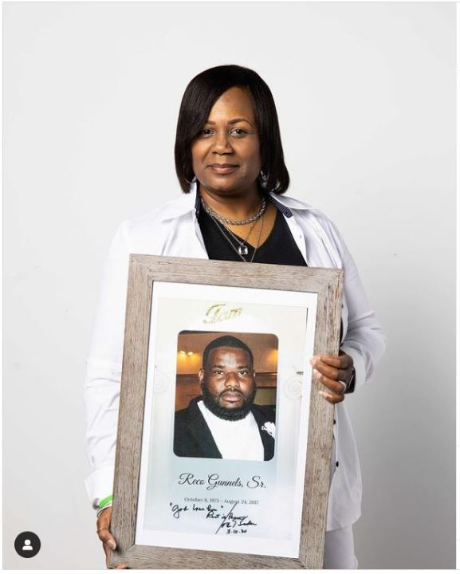

A Hero to Many
Reco Gunnels, Sr. was an advocate for his children, family, friends, and community. He was well-loved by those around him and was a hero to his family. In August 2017, Reco was taken from his loved ones and tragically murdered. Though his family was not there when he passed, Reco was not alone, as one lady sat with him until he took his final breath.
Reco’s death devastated his family, including his sister Kelly. To Kelly, Reco was more than her brother. He was a champion who protected and showed up for his community no matter where they came from. Soon after his passing, Kelly and her family discovered Reco had made a final selfless decision: registering to be an organ, eye, and tissue donor.
An Inspiration to All
One month before he passed, Reco had updated his driver’s license and said yes to becoming an organ donor. Inspired by her brother’s selfless choice, Kelly changed her driver’s license to say yes! Reco was a cornea and tissue donor. Reco’s family found peace knowing someone is walking this earth and seeing through Reco’s eyes, or without pain while embracing their loved ones with new skin because of his decision to give life.
"The greatest gift one can give is the gift of life."
Donate Life Champion
Working at UC Health, part of Kelly’s ongoing journey is being a part of others’ experiences in giving or receiving the gift of donation. In memory of her brother, Kelly wears a green Donate Life band. She is reminded of his gift every time she glances down at it. The band also opens opportunities for Kelly to share Reco’s story with other donor families and recipients.
"Your decision to donate can be the light in someone's darkest hour."
Kelly recognizes donation as a new beginning by giving or receiving a new life. She says, “Reco, you are never forgotten, my little big brother,” and keeps his memory alive by sharing his story as a source of strength for those affected by donation and encouragement for others to register their decision to be an organ, eye, and tissue donor.